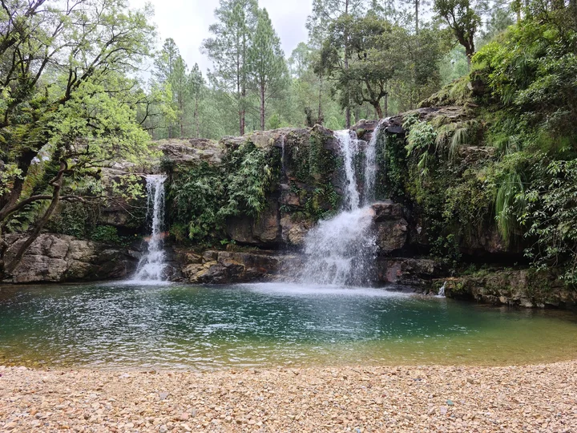
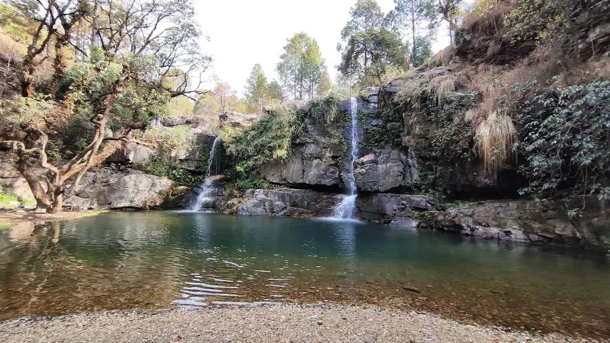
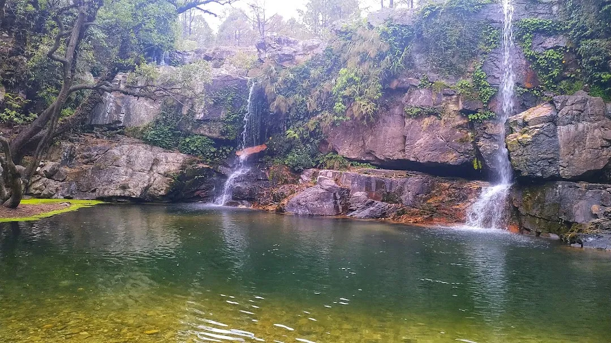

Korla Tal is a peaceful and lesser-known natural lake located in the Champawat district of Uttarakhand, surrounded by dense forests and untouched Himalayan landscapes. Far from the noise of crowded tourist spots, this hidden gem offers a calm and refreshing escape into nature. The lake, with its still and clear waters reflecting the surrounding greenery, creates a magical and soothing atmosphere that instantly relaxes the mind and soul.
The journey to Korla Tal itself is scenic, passing through forest trails and quiet hill paths, making it an ideal destination for nature lovers, photographers, and those seeking solitude. The peaceful environment, chirping birds, and cool mountain breeze make it perfect for meditation, short hikes, and spending quality time in nature. Korla Tal remains largely unexplored, preserving its raw beauty and making it a perfect offbeat destination in Uttarakhand.
March to June offers pleasant weather and lush greenery, making it ideal for visiting and exploring the area. September to November provides clear skies, fresh air, and beautiful forest views after the monsoon. Avoid heavy monsoon (July–August) due to slippery trails, while winters can be cold but peaceful with a misty atmosphere.
Relaxing by the tranquil lake, nature photography, bird watching, short forest hikes, and enjoying the peaceful Himalayan environment. The reflection of trees in the lake and the untouched surroundings make it perfect for quiet moments and scenic exploration.
Carry water, snacks, and basic essentials as facilities are minimal. Wear comfortable shoes for walking or trekking. Visit during daytime for safety and better visibility. Maintain cleanliness and avoid littering to preserve the natural beauty. Ideal for those seeking peace and solitude rather than crowded tourism.
"At Korla Tal, where the forest embraces the still waters and silence flows like a gentle breeze, one finds a rare kind of peace — a place untouched by time, where nature reveals its purest and most calming form."